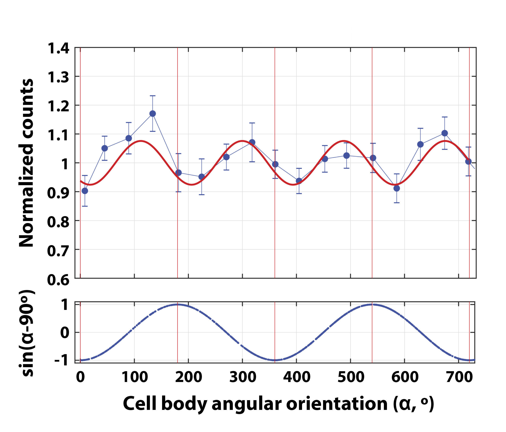
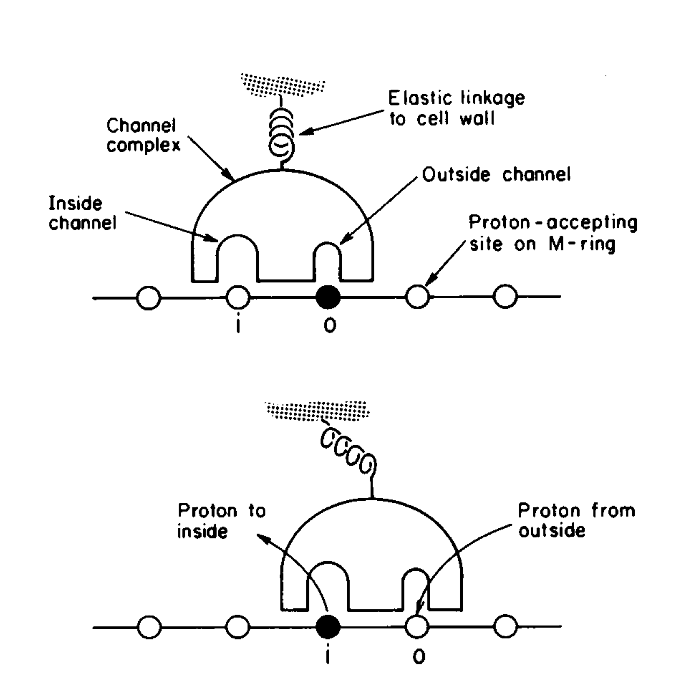
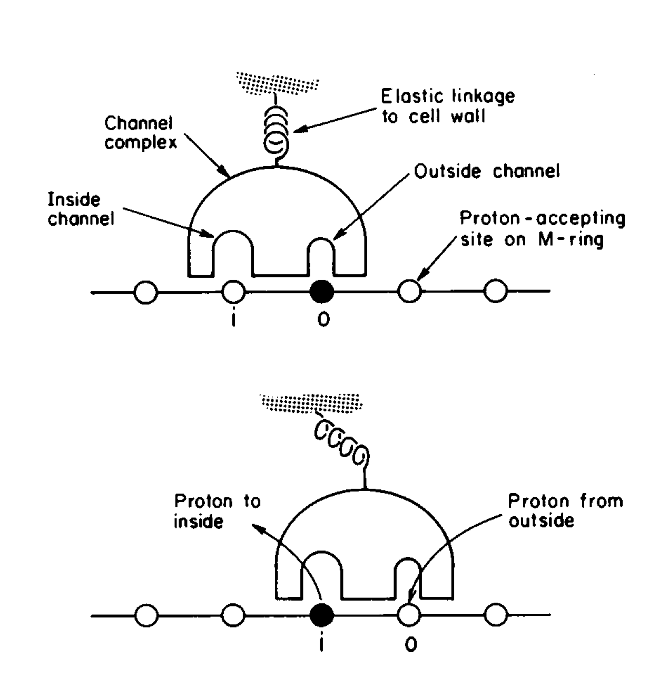
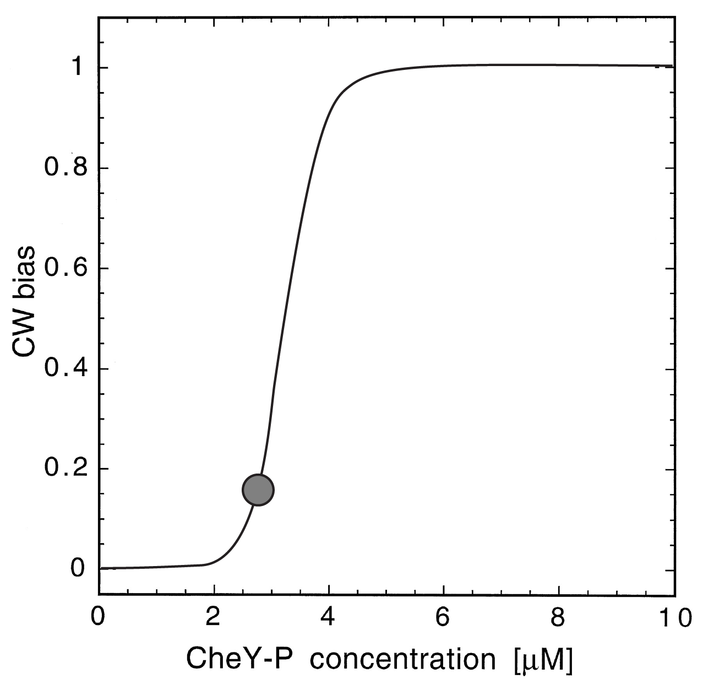
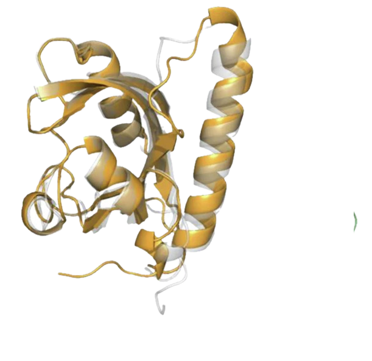
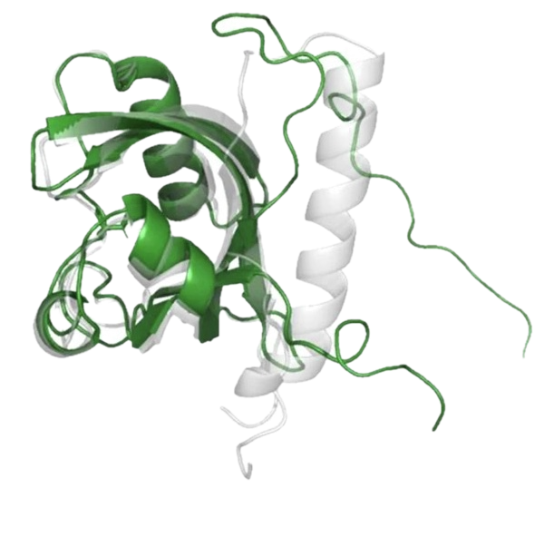
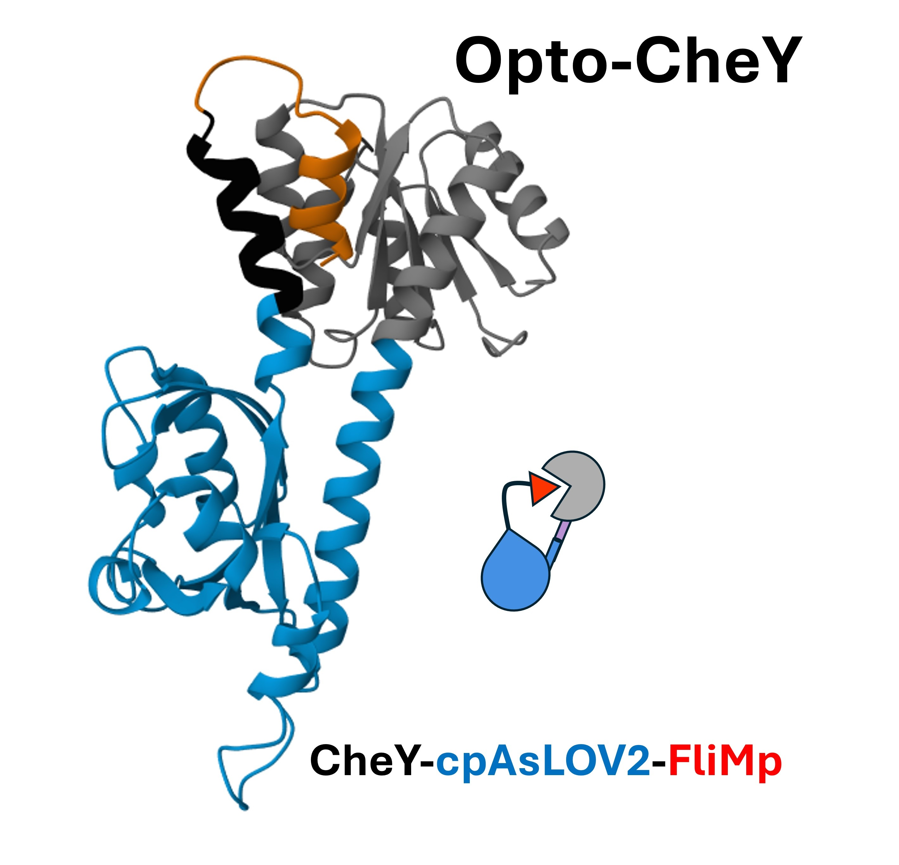
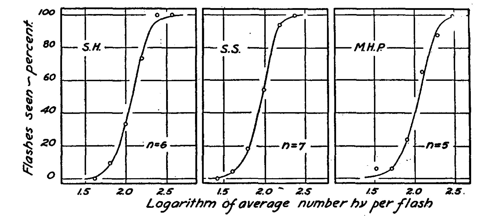

https://bit.ly/SamuelFlatiron2025
Bacterial Chemotaxis
Aravi Samuel


"I would study bacteria, but I don't know how to tame them."
-Max Delbrück
Escherichia coli
Biased random walks

E. coli performing a random walk.
Planar projections of a 3D track
Flagella rotate


CCW rotation → run
CW rotation → tumble
"If bacterial flagella rotate, the structures at the base of the flagellum
deserve more attention than they have received thus far."
Berg and Brown, 1972
Part 1: Motor mechanics
The flagellar motor

Fluctuation analysis of motor speed

Samuel and Berg, 1995
Small speed fluctuations → many steps
\[ \left< \theta \right> = \phi \times \left< n \right> \]
\[ \left< \theta^2 \right> - \left< \theta \right>^2 = \phi^2 \times \left( \left< n^2 \right> - \left< n \right> ^2 \right) \]
\[ \left< n^2 \right> - \left< n \right> ^2 = \left< n \right> \]
\[ \therefore \phi=\frac{\left< \theta^2 \right> - \left< \theta \right> ^2}{\left< \theta \right>} \]
Cryo-EM of the rotor

Deme et al 2020, Tan et al 2021, Johnson et al., 2024
Cryo-EM of the stator

Deme et al 2020
Santiveri et al 2020
ATP synthase

Proton-driven rotation
5:2 stoichiometry
Switching gears?
Polarized photobleaching → polarization-dependent fluorescence

Hosu et al 2017
MotB stalk fused to YFP
Labeled MotB dimer with unlabeled MotA pentamer
Labeled MotA pentamer with unlabeled MotB dimer
Synchronizing signals
Experimental setup

Following MotB (stalk) fluorescence

Polarized photobleaching

Cell rotates
Unbleached MotB fluoresces

Reaches maximum at 90°
Cell rotates

Cell rotates

Reaches minimum at 180°

Recovers...

And so on...
And so on...

And so on...
And so on...

And so on...

And so on...
And so on...

And so on...

And so on...
And so on...
And so on...
And so on...
And so on...

And so on...
And so on...
And so on...
MotB (stalk) rotation is locked to the cell
Two MotB fluorescence cycles for every rotation cycle
MotB fluorescence cycle is 1.9 ± 0.2 × faster than motor rotation cycle
How does MotA move?
 

Stepping?
Stepping?
Stepping?

Stepping?

Stepping?
Stepping?

Spinning?

Spinning?

Spinning?

Spinning?
Spinning?

Spinning?
One cell rotation →
(gear ratio + 1) MotA rotations
2x(gear ratio + 1) fluorescence cycles
MotA spins much faster than the cell
MotA fluorescence cycle is 14.4 ± 1.1 × faster than motor rotation cycle
Gear ratio → 6.2
Interlocking gear ratio → 34/5
Part 2: Signal transduction
"If bacterial flagella rotate, the structures at the base of the flagellum
deserve more attention than they have received thus far."
Berg and Brown, 1972
Impulse response

Small change in 'bound receptor' (0.0042) → Large change in bias (0.23)
Block, Segall, and Berg, 1982
Signal transduction

increase [cheY-P] → increase CW bias
decrease [cheY-P] → decrease CW bias
Seeing signals

Sourjik and Berg, 2002
Ultrasensitivity

Cluzel et al. 2000
Sending signals?

Boyden, 2012
Sending signals?

Start with high bias
Sending signals?

Flash → End with low bias
Sending signals?
Start with low bias
Sending signals?

Flash → End with high bias
Avena sativa
Phototropin 1
Unlit state
Phototropin 1
Lit state
AlphaFold
Blue light → uncaging → active CheY
Dark → re-caging → inactive CheY
Optogenetic impulse response

Optogenetic impulse response

Large number of potential photon/rhodopsin quantal responses: $N$
Small probability of success for each potential response: $p$
Number of `successful' quantal responses in each trial: $n = pN $
$n \lll N$ → We can use Poisson statistics
Poisson statistics
Let $a$ be the average number of quantal responses per flash
Poisson statistics gives the probability that the flash yields exactly $n$ quanta: \[ P_n = \frac{a^n e^{-a}}{n!} \]
The Probability of Seeing is the probability that the number of quanta exceeds a threshold $\theta$: \[ P_{see}=\sum_{k=\theta}^{\infty} P_k \]
Human threshold for seeing
Motor threshold for seeing

Dissecting a circuit
Motivation

Curiosity is the driving force of basic science.
-Howard Berg
Acknowledgments

Alina Vrabioiu

Dean's Competitive Fund, Harvard
Chris Stubbs, Jeff Lichtman

Gabriel Hosu
Team fly
David Zimmerman
Stan Lazopulo
Team worm
Helena Casademunt
Ishaan Chandok
Team undergrad
Rafael Jacobsen
Rahm Bharara
CheY inactivation by sequestration

In the `lit' state, AsLOV2 binds to PDZ
CAD forms a dodecameric sequestration scaffold
Optogenetic switching
from CW → CCW rotation

Optogenetic switching
from CW → CCW rotation

Measuring the response curve
with long-lived probes